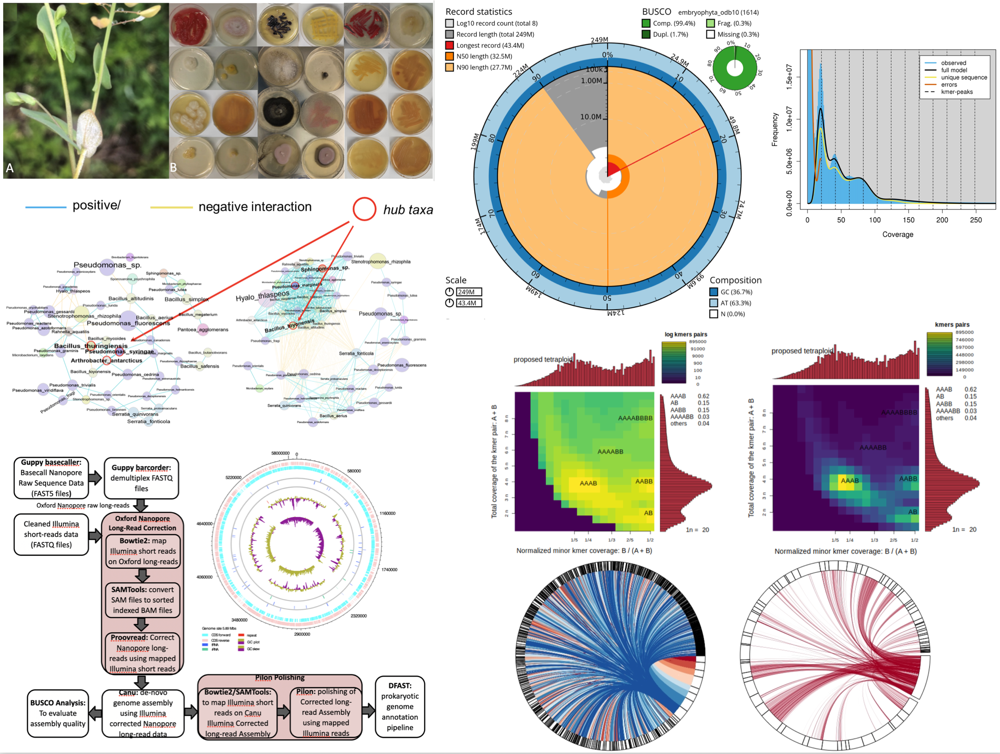
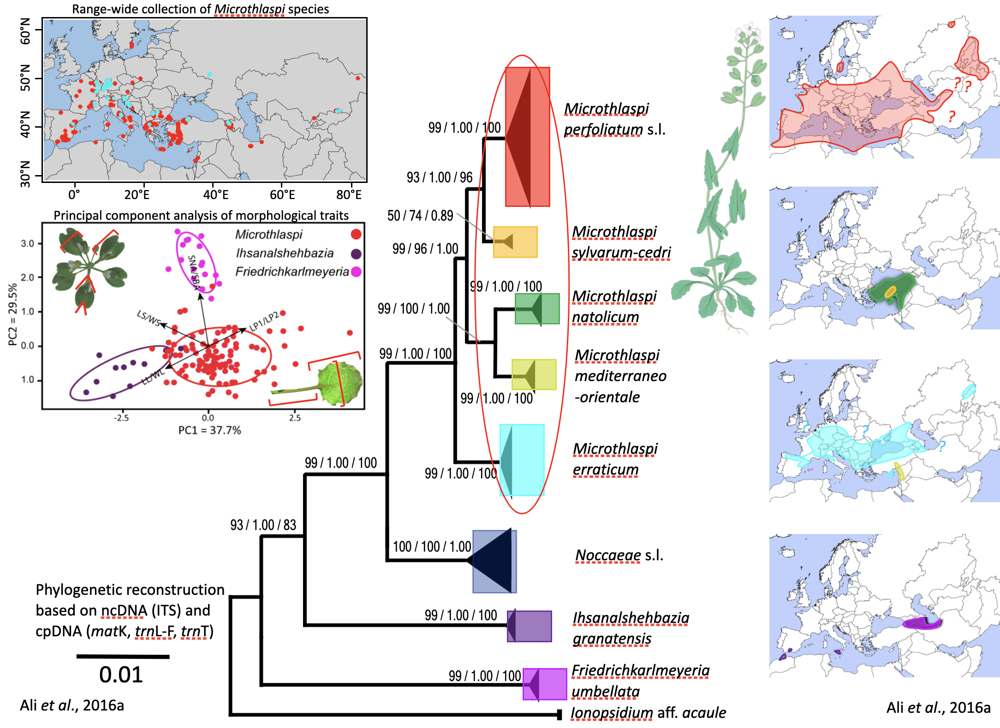
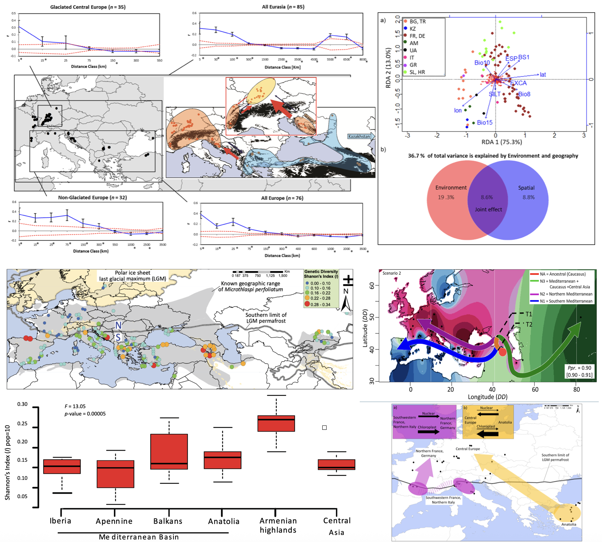
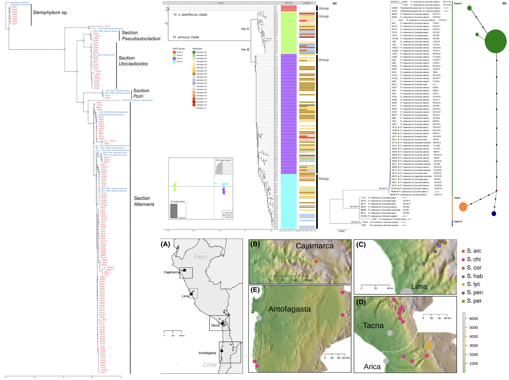

Projects
High-Resolution Genomics Hybridisation Genomics Temporal Genomics Climate Adaptation & Seed Dormancy Systematics & Taxonomy Phylogeography of Microthlaspi Fungal Diversity & Communities Downy Mildew Pathogens
High-Resolution Genomics of Plant–Microbe Systems (Ongoing)

Summary:
This project focuses on generating high-quality, chromosome-level genome assemblies for Brassicaceae species and their associated phyllosphere bacterial communities. Advanced sequencing technologies—including PacBio HiFi, Oxford Nanopore, Hi-C, and Illumina short-read platforms—are used to produce detailed genomic resources for both host plants and key bacterial “hub” taxa. These assemblies provide a foundation for studying genome structure, gene content, and evolutionary dynamics in both plants and their microbial partners. The resulting datasets contribute to multiple projects by enabling comparative analyses, facilitating the identification of functional genes, and supporting investigations into plant–microbe interactions.
Hybridisation Genomics (Ongoing)

Summary:
Hybridisation is a fundamental evolutionary process that generates novel genetic combinations, facilitates adaptation, and can drive the formation of new species. This project investigates how hybridisation and temporal selection shape genetic diversity and adaptation in Arabis and related Brassicaceae species. High-throughput sequencing, field experiments, and phenotyping are combined to analyse the genomic consequences of hybridisation in both experimental crosses and natural hybrid zones. Patterns of introgression, ancestry dynamics, and the architecture of reproductive barriers are examined to reveal how environmental factors and selection influence the persistence or loss of hybrid genotypes. Comparative analyses of hybrid populations provide insight into the evolutionary forces driving adaptation, the maintenance of species boundaries, and the role of hybridisation in diversification under changing environments.
Temporal Genomics (Ongoing)

Summary:
Temporal genomics approaches are used to detect evolutionary change by tracking allele frequency shifts across generations. This project focuses on Arabidopsis lyrata populations sampled at two time points separated by ~10–20 generations, enabling direct observation of genetic responses to recent climate change. Genome-wide selection scans identify loci showing significant temporal shifts, pinpointing genomic regions under selection and providing evidence for adaptive evolution. By linking allele frequency changes to environmental trends (temperature, precipitation, snow cover), the research uncovers how natural selection acts on standing genetic variation. This work establishes a framework for studying rapid adaptation in natural populations and for predicting how species respond to ongoing environmental change.
Climate Adaptation and Seed Dormancy in Plants

Summary:
This project investigates how plants respond to past and present climate change through the lenses of phylogeography, landscape genetics, and adaptive seed dormancy. By combining molecular genetics with ecological and spatial analyses, the research reveals how Quaternary climatic oscillations have shaped the genetic structure and distribution of species such as Adenophora liliifolia across Europe. The work highlights the importance of glacial refugia, postglacial recolonisation, and fragmentation of genetic diversity in shaping current biodiversity patterns. A comprehensive review of phylogeography and landscape genetics provides a conceptual and methodological framework for understanding species’ range dynamics and for designing studies that integrate genetics, geography, and ecology. In parallel, experimental studies on Arabidopsis thaliana demonstrate how heat-induced secondary dormancy acts as a key adaptive trait, enabling seeds to fine-tune germination timing in response to environmental cues. The genetic basis and ecological significance of secondary dormancy are explored, showing its role in population resilience and local adaptation under changing climates. Together, these studies advance our understanding of plant evolutionary responses to environmental variability and inform conservation strategies for maintaining genetic diversity.
Systematics and Taxonomy of Microthlaspi and Coluteocarpeae

Summary:
This project addresses longstanding taxonomic challenges within the tribe Coluteocarpeae, focusing on the genus Microthlaspi and its relatives. Through detailed phylogenetic analyses using nuclear and chloroplast loci, the research clarifies relationships among key genera, leading to the recognition of new genera and species, and the redefinition of existing taxa. The work combines molecular data with critical morphological review, resulting in the discovery and description of new species and the resolution of cryptic diversity. These findings have important implications for the classification and evolutionary understanding of Brassicaceae, highlighting the need for integrative approaches in plant systematics. The project also provides comprehensive taxonomic treatments, distribution maps, and diagnostic illustrations, serving as a reference for future studies in this group.
Phylogeography and Postglacial History of Microthlaspi

Summary:
This project investigates the evolutionary history, migration, and genetic structure of Microthlaspi species across Eurasia and North Africa. Using a combination of AFLP and sequence data, the research reveals how climatic heterogeneity, selfing, and fragmented distributions have shaped genetic diversity. The studies demonstrate that M. erraticum is far more widespread than previously thought, with populations spanning from the Alps to Central Asia. Analyses of M. perfoliatum show survival in multiple Pleistocene refugia and complex postglacial recolonisation routes, with Central Europe acting as a suture zone for genotypes from different refugia. The results highlight the interplay of climate, geography, and historical demography in shaping present-day biodiversity and provide molecular evidence for both ancient and recent migration events.
Fungal Diversity, Systematics, and Plant-Associated Communities

Summary:
This project investigates the diversity, taxonomy, and ecological roles of fungi in both forest and plant-associated environments. Detailed phylogenetic and morphological analyses have clarified the taxonomy and evolutionary placement of Cortinarius sect. Riederi, leading to the description of new species and revealing its unique lineage among mushroom-forming fungi. Similarly, a comprehensive revision of Inocybe subgenus Inocybe in Central Europe has uncovered overlooked diversity and resolved complex synonymies, supported by molecular data. Beyond taxonomy, the project explores the structure and dynamics of root endophytic fungal communities in non-mycorrhizal plants such as Microthlaspi spp. Large-scale sampling and multilocus genotyping have shown that a few dominant fungal groups are widespread across Europe, with community composition shaped more by environmental gradients than by host genotype or geography. These studies highlight the hidden diversity, efficient dispersal, and ecological specialization of fungi, and provide a foundation for understanding their roles in plant health and ecosystem functioning.
Emergence and Evolution of Downy Mildew Pathogens

Summary:
This project investigates the emergence, spread, and evolutionary dynamics of downy mildew pathogens affecting both ornamental and crop plants in Europe. Recent work has documented the introduction and rapid spread of Peronospora aquilegiicola, a destructive pathogen of columbines, from East Asia to Britain and Germany, raising concerns about its potential impact on native and cultivated Aquilegia species. In parallel, population genetic studies of Pseudoperonospora cubensis, the causal agent of downy mildew in cucurbits, have revealed shifts in genetic structure and virulence, likely linked to hybridization or mutation events that broaden host range. Research on Plasmopara halstedii, a major pathogen of sunflower, has uncovered multiple introductions and distinct lineages across Europe, as well as evidence for host-associated genetic differentiation. These studies combine field surveillance, molecular phylogenetics, and population genomics to better understand the factors driving pathogen emergence, adaptation, and the risks posed to agriculture and biodiversity.